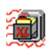
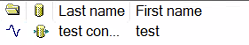
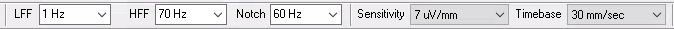
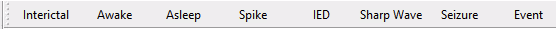

Power on the workstation, launch the Natus NeuroWorks app, and log in with your secure credentials.

Navigate to the Patient Studies list or use the search function to locate a record. Then select the desired EEG study.

Select the bipolar montage Bipolar LT over RT and adjust display settings: Sensitivity 7 μV, Time base 30 mm/sec, and Filters (High 70 Hz, Low 1 Hz).

Scroll through the recording to inspect waveforms. Use built-in tools to assess amplitude, frequency, and add annotations.
Place event markers by clicking the designated buttons at the top of the screen.

After review, open Epic's reporting interface, generate a new report, and pend the note for review.